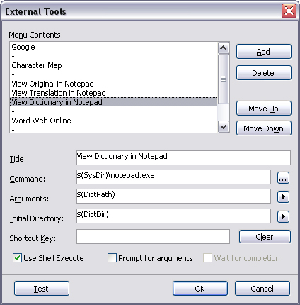

You can add items to the Tools menu that allow you to launch external tools from within Ini Translator. For example, you can add an item to the Tools menu to launch utilities such as Character Map or Notepad. You can even add commands to open webpages or e-mail clients.
The External Tools dialog is available from the Tools-Customize menu:

&Notepad
would display Notepad on the Tools menu.
Predefined Arguments
The following predefined arguments are available from the Arrow menus (not all arguments are available everywhere) :
| Name | Argument | Description |
|---|---|---|
| Original Line | $(OrigLine) | The entire text of the current original item |
| Original Text | $(OrigText) | The selected text of the current original item |
| Original Path | $(OrigPath) | Full path and filename of the current original file |
| Original Directory | $(OrigDir) | Path of the current original file |
| Original Name | $(OrigName) | Filename of the current original file, without path |
| Original Extension | $(OrigExt) | File extension of the current original file, including leading dot |
| Translation Line | $(TransLine) | The entire text of the current translation item |
| Translation Text | $(TransText) | The selected text of the current translation item |
| Translation Path | $(TransPath) | Full path and filename of the current translation file |
| Translation Directory | $(TransDir) | Path of the current translation file |
| Translation Name | $(TransName) | Filename of the current translation file, without path |
| Translation Extension | $(TransExt) | File extension of the current translation file, including leading dot |
| Dictionary Path | $(DictPath) | Full path and filename of the current dictionary file |
| Dictionary Directory | $(DictDir) | Path of the current dictionary file |
| Dictionary Name | $(DictName) | Filename of the current dictionary file, without path |
| Dictionary Extension | $(DictExt) | File extension of the current original file, including leading dot |
| Application Directory | $(AppDir) | Path to the Ini Translator application |
| Windows Directory | $(WinDir) | Path to the Windows folder |
| System Directory | $(SysDir) | Path to the Windows System folder |
Tip:
If you want to see the resulting command-line without executing the tool, temporarily enable Prompt for Arguments and then click the Test button. The prompt dialog is shown, displaying the command-line that will be executed. Click the Cancel button to close the prompt dialog without executing the tool. When finished, disable the Prompt for Arguments option again.